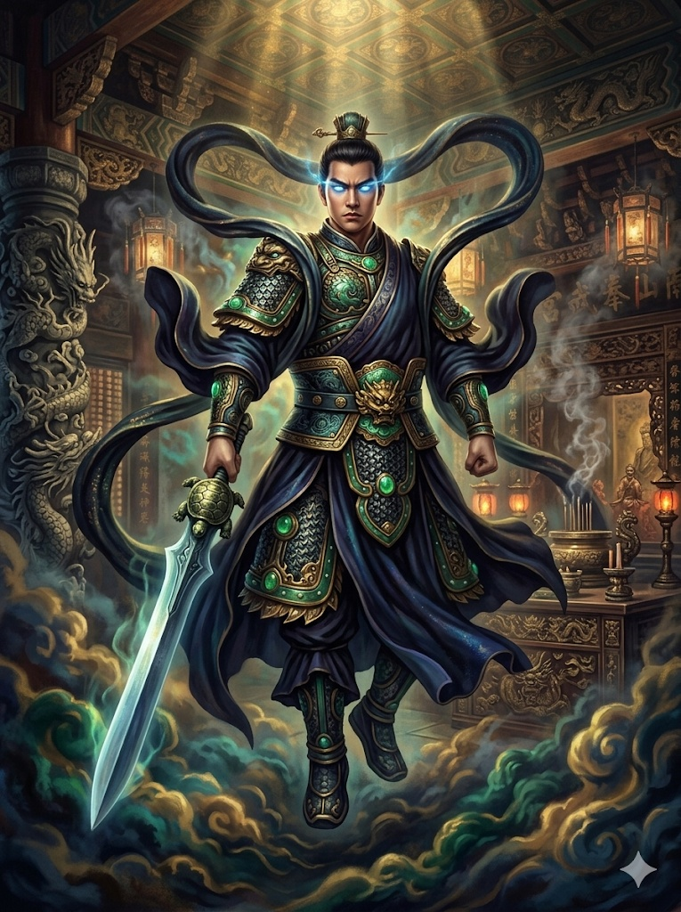
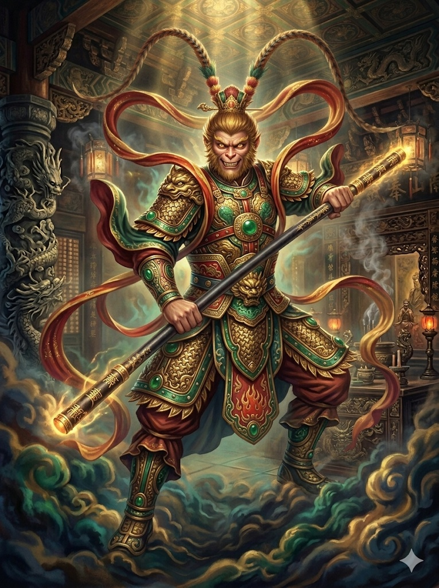
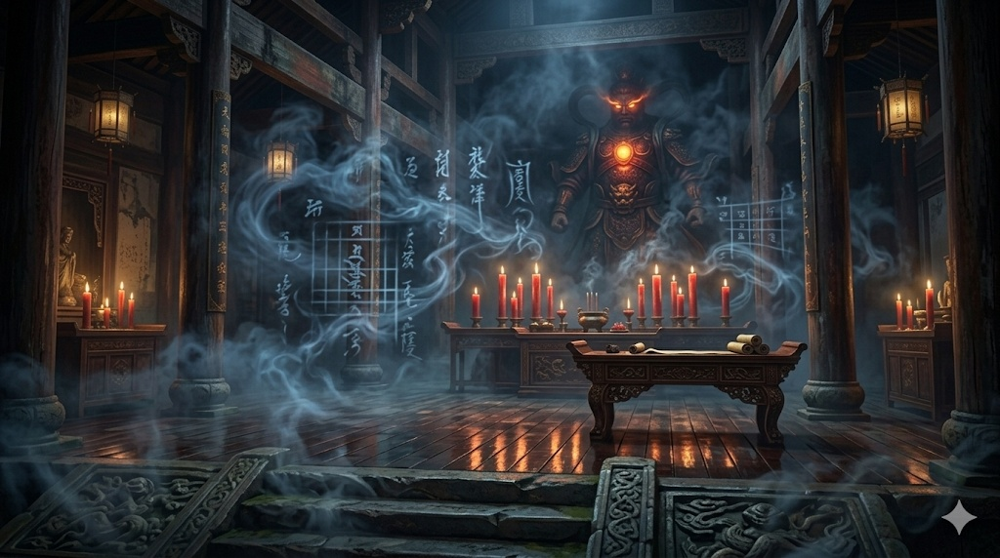
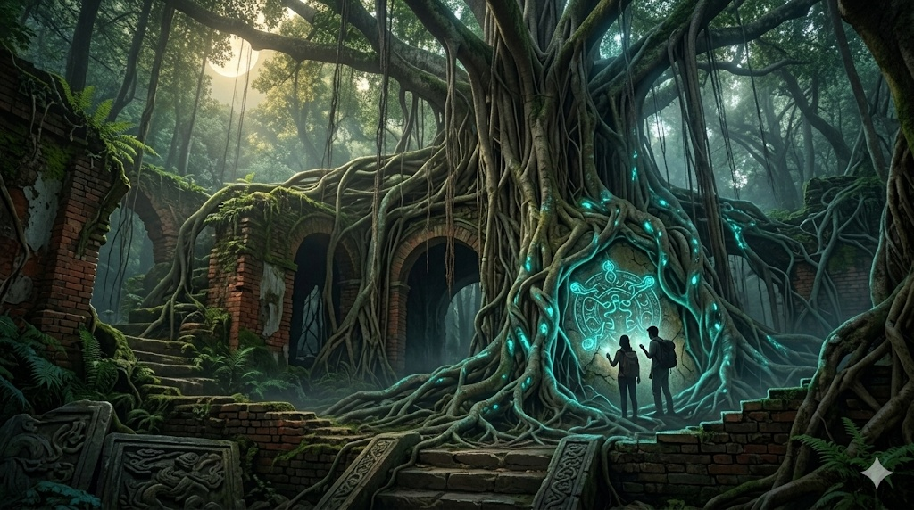

本專案遵循「賈伯斯式極簡視覺流」，排除繁瑣文字，讓 300 DPI 的 AI 美術作品作為核心說服力。我們將投影片視為畫幅，運用故事敘事法帶領觀者穿梭於府城的歷史紋理。
大圖留白排版，每張投影片聚焦單一關鍵美術概念，建立權威感。
採用「玄黑、絳紅、帝金」作為主軸，還原台南古廟的神秘感。

融合傳統道教符號與現代奇幻感，重塑經典文學角色法相


從赤崁晨曦到時空裂縫，將台南古蹟與 AI 重塑的奇幻世界完美交疊，建立玩家的視覺解謎連結。
16:9 沉浸式視覺


玩家需旋轉天干地支，對比古地圖方位解鎖下一步線索。
掃描現場古蹟，觸發 AI 重塑之歷史奇幻景象與對話。
Project Asset Metrics
本專案不記只是美術生成，更是為實體文創預留空間。所有資產具備 300 DPI 高解析度，並保留 PSD 分層，隨時可進行 UI 排版或印刷轉化。
3
角色設計 (3:4)
5
解謎場景 (16:9)
2
宣傳海報 (16:9)
100%
PSD 分層交付